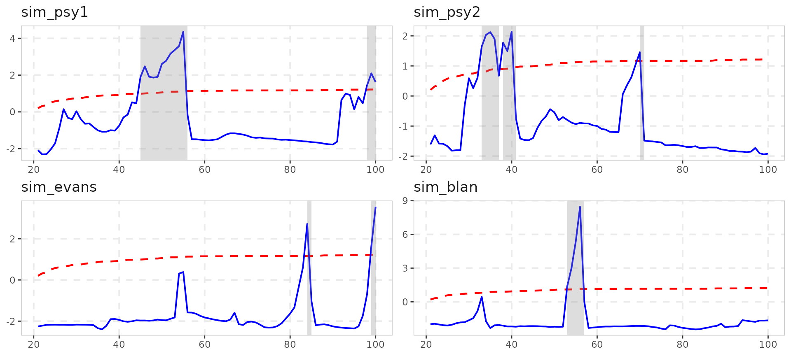
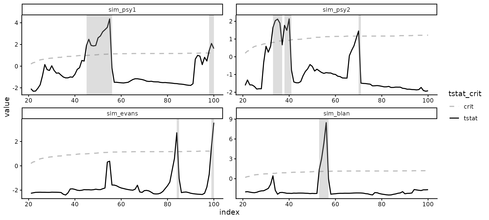
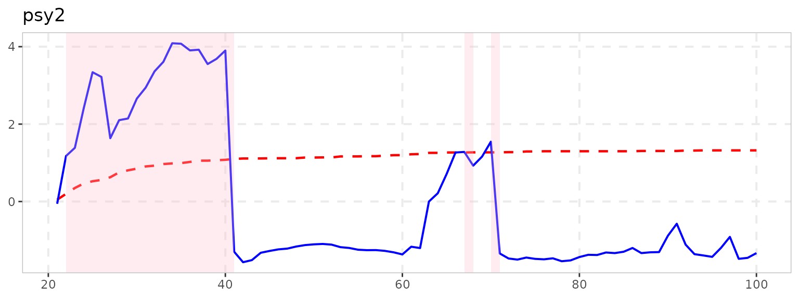
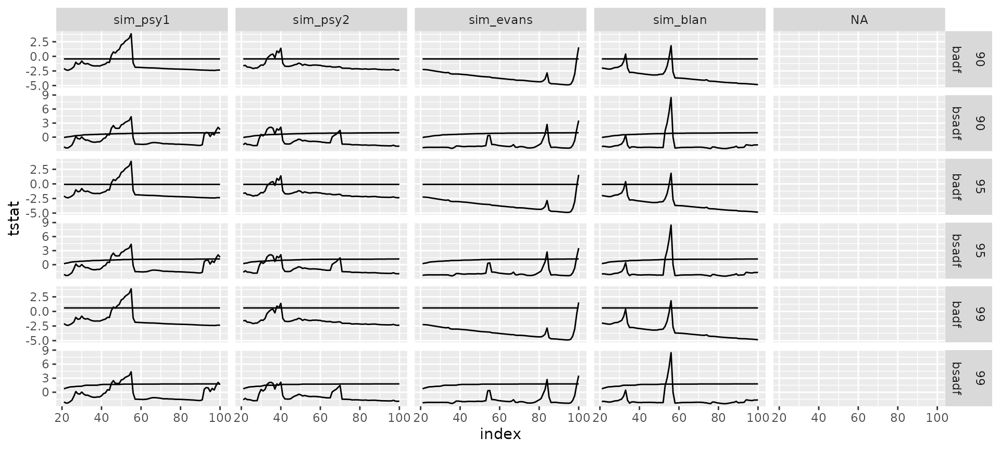
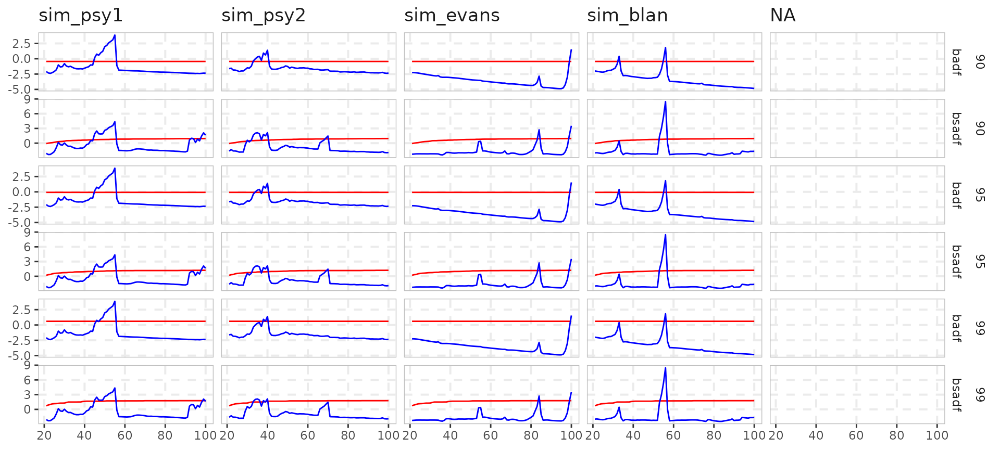
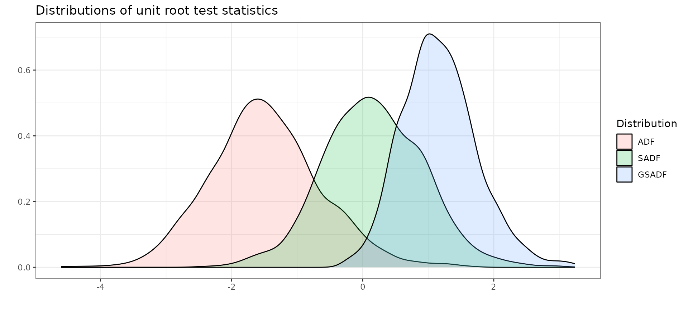
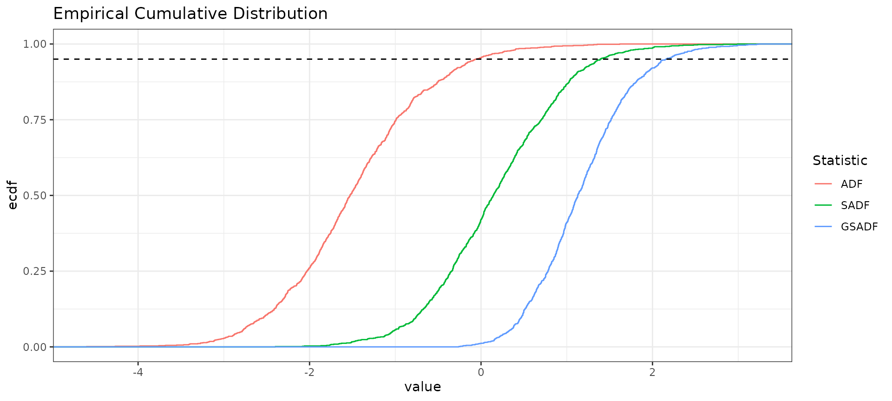
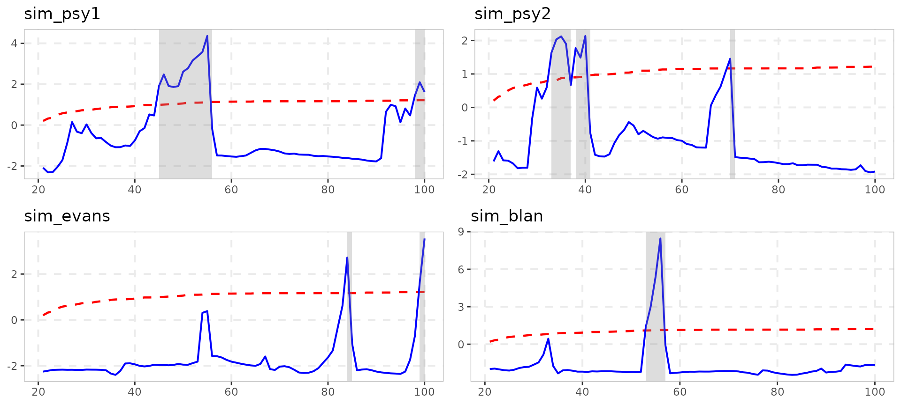

The plotting API has changed in exuber 0.4.0
The new design offers full flexibility and customization to produce
publication-ready plots. exuber used to plot graph
individually in a list, and then you could modify each plot and arrange
them into a single grob with ggarrange()(which now is
defunct). However, newer versions of exuber focus on providing a faceted
plot as it easier to change the aesthetics and themes.
Let’s start by simulating some data.
Same Appearance with New Features
The visual output of autoplot in v0.4.0 is exactly the
same as before.
autoplot(estimation, crit_values)
#> Warning: Using `size` aesthetic for lines was deprecated in ggplot2 3.4.0.
#> ℹ Please use `linewidth` instead.
#> ℹ The deprecated feature was likely used in the exuber package.
#> Please report the issue at <https://github.com/kvasilopoulos/exuber/issues>.
#> This warning is displayed once per session.
#> Call `lifecycle::last_lifecycle_warnings()` to see where this warning was
#> generated.
However, almost all aspects of the plot can be easily changed.Change color and theme
The custom color for autoplot are “blue and”red”, however the user
can easily override this option with
ggplot2::scale_color_manual.
autoplot(estimation, crit_values) +
scale_color_manual(values = c("grey","black")) +
theme_classic()
Changed the shaded region with shade_opt
shade_opt allows the user to manipulate the
geom_rect() layer of the ggplot, using the
shade function. Alternatively, it can be omitted if it set
to NULL.

Custom plotting
Custom plotting is also very easy with the
augment_join(), that merge the output of the estimation and
and critical values in a ggplot2-friendly way.
joined <- augment_join(estimation, crit_values)
joined
#> # A tibble: 1,926 × 8
#> key index id data stat tstat sig crit
#> <int> <dbl> <fct> <dbl> <fct> <dbl> <fct> <dbl>
#> 1 21 21 sim_psy1 119. badf -2.08 90 -0.44
#> 2 22 22 sim_psy1 112. badf -2.31 90 -0.44
#> 3 23 23 sim_psy1 111. badf -2.39 90 -0.44
#> 4 24 24 sim_psy1 104. badf -2.26 90 -0.44
#> 5 25 25 sim_psy1 98.6 badf -2.08 90 -0.44
#> 6 26 26 sim_psy1 94.3 badf -1.79 90 -0.44
#> 7 27 27 sim_psy1 82.9 badf -1.00 90 -0.44
#> 8 28 28 sim_psy1 88.6 badf -1.34 90 -0.44
#> 9 29 29 sim_psy1 89.6 badf -1.28 90 -0.44
#> 10 30 30 sim_psy1 81.9 badf -0.800 90 -0.44
#> # ℹ 1,916 more rowsThe output of augment_join returns data in tidy format
and offers full flexibility to the user. After this point plotting
becomes extremely trivial.
joined %>%
ggplot(aes(x = index)) +
geom_line(aes(y = tstat)) +
geom_line(aes(y = crit)) +
facet_grid(sig + stat ~ id , scales = "free_y")
#> Warning: Removed 6 rows containing missing values or values outside the scale range
#> (`geom_line()`).
#> Removed 6 rows containing missing values or values outside the scale range
#> (`geom_line()`).
We also offer two functions scale_exuber_manual and
theme_exuber that offer some extra functionality.
joined %>%
pivot_longer(cols = c("tstat", "crit"), names_to = "nms") %>%
ggplot(aes(x = index, y = value, col = nms)) +
geom_line() +
facet_grid(sig + stat ~ id , scales = "free_y") +
scale_exuber_manual() +
theme_exuber()
Distribution
In addition to critical values, we can also calculate the empirical distribution by utilizing the family of *_distr functions. For example if we can simulate the distribution of the supADF tests with Monte Carlo method.
distr <- radf_mc_distr(n = 300)
autoplot(distr)
Empirical distribution
This part is made just for fun.
library(tidyr)
distr %>%
tidy() %>%
rename_all(~ stringr::str_to_upper(.)) %>%
gather(Statistic, value, factor_key = TRUE) %>%
ggplot(aes(value, color = Statistic)) +
stat_ecdf() +
ggtitle("Empirical Cumulative Distribution") +
geom_hline(yintercept = 0.95, linetype = "dashed") + theme_bw()
Old Functionality
To return to the old functionality there are several ways.
library(gridExtra)
# To choose only positive series (i.e. statistically significant for 5%)
positive_series <- diagnostics(estimation, crit_values)$positive
# Through a loop on positive series
plot_list1 <- list()
for (as in positive_series) {
plot_list1[[as]] <- autoplot(estimation, crit_values, select_series = as)
}
# Alternatively with lapply
plot_list2 <- lapply(positive_series, function(x) autoplot(estimation, crit_values, select_series = x))
names(plot_list2) <- positive_series
do.call(gridExtra::grid.arrange, plot_list1)
With the old functionality you had to make changes one at a time
plot_list1[[1]] <- plot_list1[[1]] + theme_classic()and then reconstruct the plot with grid.arrange or some
other function that arranges all plots into a single grob.
Enjoy Plotting with exuber !!!